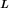
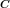

KrigingResult¶
- class KrigingResult(*args)¶
Kriging result.
- Available constructors:
KrigingResult(inputSample, outputSample, metaModel, residuals, relativeErrors, basis, trendCoefficients, covarianceModel, covarianceCoefficients)
KrigingResult(inputSample, outputSample, metaModel, residuals, relativeErrors, basis, trendCoefficients, covarianceModel, covarianceCoefficients, covarianceCholeskyFactor, covarianceHMatrix)
- Parameters
- inputSample, outputSample2-d sequence of float
The samples
 and .
and .- metaModel
Function The meta model:
 , defined in (3).
, defined in (3).- residuals
Point The residual errors.
- relativeErrors
Point The relative errors.
- basiscollection of
Basis Collection of the
 functional basis: for each
functional basis: for each ![l \in [1, p]](../../../_images/math/dcb8375f4dab00c60f50c712d11ff3c0061373ba.svg) with .
Its size must be equal to zero if the trend is not estimated.
with .
Its size must be equal to zero if the trend is not estimated.- trendCoefficientscollection of
Point The trend coeffient vectors
 .
.- covarianceModel
CovarianceModel Covariance function of the Gaussian process.
- covarianceCoefficients2-d sequence of float
The defined in (2).
- covarianceCholeskyFactor
TriangularMatrix The Cholesky factor  of .
- covarianceHMatrix
HMatrix The hmat implementation of .
Notes
The Kriging meta model is defined by:
(1)¶
where is the condition
 for each
for each ![k \in [1, N]](../../../_images/math/806b3a78a6a06749116c21a2ac4b7e5c21548664.svg) .
.Equation (1) writes:

where
and
(2)¶
At the end, the meta model writes:
(3)¶
Examples
Create the model and the samples:
>>> import openturns as ot >>> f = ot.SymbolicFunction(['x'], ['x * sin(x)']) >>> sampleX = [[1.0], [2.0], [3.0], [4.0], [5.0], [6.0]] >>> sampleY = f(sampleX)
Create the algorithm:
>>> basis = ot.Basis([ot.SymbolicFunction(['x'], ['x']), ot.SymbolicFunction(['x'], ['x^2'])]) >>> covarianceModel = ot.GeneralizedExponential([2.0], 2.0) >>> algoKriging = ot.KrigingAlgorithm(sampleX, sampleY, covarianceModel, basis) >>> algoKriging.run()
Get the result:
>>> resKriging = algoKriging.getResult()
Get the meta model:
>>> metaModel = resKriging.getMetaModel()
Methods
__call__(*args)Compute the conditional Gaussian distribution on a new point / sample conditionally to the observed paths.
Accessor to the collection of basis.
Accessor to the object's name.
getConditionalCovariance(*args)Compute the conditional covariance of the Gaussian process on a point (or several points).
Compute the conditional covariance of the Gaussian process on a point (or several points).
Compute the conditional variance of the Gaussian process on a point (or several points).
getConditionalMean(*args)Compute the conditional mean of the Gaussian process on a point or a sample of points.
Accessor to the covariance coefficients.
Accessor to the covariance model.
getId()Accessor to the object's id.
Accessor to the input sample.
Accessor to the metamodel.
getModel()Accessor to the model.
getName()Accessor to the object's name.
Accessor to the output sample.
Accessor to the relative errors.
Accessor to the residuals.
Accessor to the object's shadowed id.
Accessor to the trend coefficients.
Accessor to the object's visibility state.
hasName()Test if the object is named.
Test if the object has a distinguishable name.
setMetaModel(metaModel)Accessor to the metamodel.
setModel(model)Accessor to the model.
setName(name)Accessor to the object's name.
setRelativeErrors(relativeErrors)Accessor to the relative errors.
setResiduals(residuals)Accessor to the residuals.
setShadowedId(id)Accessor to the object's shadowed id.
setVisibility(visible)Accessor to the object's visibility state.
- __init__(*args)¶
- getBasisCollection()¶
Accessor to the collection of basis.
- Returns
- basisCollectioncollection of
Basis Collection of the
function basis: for each with .
- basisCollectioncollection of
Notes
If the trend is not estimated, the collection is empty.
- getClassName()¶
Accessor to the object’s name.
- Returns
- class_namestr
The object class name (object.__class__.__name__).
- getConditionalCovariance(*args)¶
Compute the conditional covariance of the Gaussian process on a point (or several points).
- Available usages:
getConditionalCovariance(x)
getConditionalCovariance(sampleX)
- Parameters
- xsequence of float
The point
 where the conditional covariance of the output has to be evaluated.
where the conditional covariance of the output has to be evaluated.- sampleX2-d sequence of float
The sample where the conditional covariance of the output has to be evaluated (M can be equal to 1).
- Returns
- condCov
CovarianceMatrix The conditional covariance at point
.
Or the conditional covariance matrix at the sample :where .
- condCov
- getConditionalMarginalCovariance(*args)¶
Compute the conditional covariance of the Gaussian process on a point (or several points).
- Available usages:
getConditionalMarginalCovariance(x)
getConditionalMarginalCovariance(sampleX)
- Parameters
- xsequence of float
The point
where the conditional marginal covariance of the output has to be evaluated.- sampleX2-d sequence of float
The sample where the conditional marginal covariance of the output has to be evaluated (M can be equal to 1).
- Returns
- condCov
CovarianceMatrix The conditional covariance at point
.- condCov
CovarianceMatrixCollection The collection of conditional covariance matrices at each point of the sample :
- condCov
Notes
In case input parameter is a of type
Sample, each element of the collection corresponds to the conditional covariance with respect to the input learning set (pointwise evaluation of the getConditionalCovariance).
- getConditionalMarginalVariance(*args)¶
Compute the conditional variance of the Gaussian process on a point (or several points).
- Available usages:
getConditionalMarginalVariance(x, marginalIndex)
getConditionalMarginalVariance(sampleX, marginalIndex)
getConditionalMarginalVariance(x, marginalIndices)
getConditionalMarginalVariance(sampleX, marginalIndices)
- Parameters
- xsequence of float
The point
where the conditional variance of the output has to be evaluated.- sampleX2-d sequence of float
The sample where the conditional variance of the output has to be evaluated (M can be equal to 1).
- marginalIndexint
Marginal of interest (for multiple outputs). Default value is 0
- marginalIndicessequence of int
Marginals of interest (for multiple outputs).
- Returns
- varfloat
Variance of interest. float if one point (x) and one marginal of interest (x, marginalIndex)
- varPointsequence of float
The marginal variances
Notes
In case of fourth usage, the sequence of float is given as the concatenation of marginal variances for each point in sampleX.
- getConditionalMean(*args)¶
Compute the conditional mean of the Gaussian process on a point or a sample of points.
- Available usages:
getConditionalMean(x)
getConditionalMean(sampleX)
- Parameters
- xsequence of float
The point
where the conditional mean of the output has to be evaluated.- sampleX2-d sequence of float
The sample where the conditional mean of the output has to be evaluated (M can be equal to 1).
- Returns
- condMean
Point The conditional mean at point
.
Or the conditional mean matrix at the sample :
- condMean
- getCovarianceCoefficients()¶
Accessor to the covariance coefficients.
- getCovarianceModel()¶
Accessor to the covariance model.
- Returns
- covModel
CovarianceModel The covariance model of the Gaussian process W with its optimized parameters.
- covModel
- getId()¶
Accessor to the object’s id.
- Returns
- idint
Internal unique identifier.
- getName()¶
Accessor to the object’s name.
- Returns
- namestr
The name of the object.
- getRelativeErrors()¶
Accessor to the relative errors.
- Returns
- relativeErrors
Point The relative errors defined as follows for each output of the model:
 with
with  the vector of the
the vector of the  model’s values
model’s values
 and
and  the metamodel’s values.
the metamodel’s values.
- relativeErrors
- getResiduals()¶
Accessor to the residuals.
- Returns
- residuals
Point The residual values defined as follows for each output of the model:
 with the model’s values and the
metamodel’s values.
with the model’s values and the
metamodel’s values.
- residuals
- getShadowedId()¶
Accessor to the object’s shadowed id.
- Returns
- idint
Internal unique identifier.
- getTrendCoefficients()¶
Accessor to the trend coefficients.
- Returns
- trendCoefcollection of
Point The trend coefficients vectors
- trendCoefcollection of
- getVisibility()¶
Accessor to the object’s visibility state.
- Returns
- visiblebool
Visibility flag.
- hasName()¶
Test if the object is named.
- Returns
- hasNamebool
True if the name is not empty.
- hasVisibleName()¶
Test if the object has a distinguishable name.
- Returns
- hasVisibleNamebool
True if the name is not empty and not the default one.
- setModel(model)¶
Accessor to the model.
- Parameters
- model
Function Physical model approximated by a metamodel.
- model
- setName(name)¶
Accessor to the object’s name.
- Parameters
- namestr
The name of the object.
- setRelativeErrors(relativeErrors)¶
Accessor to the relative errors.
- Parameters
- relativeErrorssequence of float
The relative errors defined as follows for each output of the model:
with the vector of the model’s values
and the metamodel’s values.
- setResiduals(residuals)¶
Accessor to the residuals.
- Parameters
- residualssequence of float
The residual values defined as follows for each output of the model:
with the model’s values and the
metamodel’s values.
- setShadowedId(id)¶
Accessor to the object’s shadowed id.
- Parameters
- idint
Internal unique identifier.
- setVisibility(visible)¶
Accessor to the object’s visibility state.
- Parameters
- visiblebool
Visibility flag.